Ford Explorer EcoBoost Plug-in Hybrid (ST-Line)
42980 PLN
Dorfmark
55.538 km
FORD Explorer EcoBoost Plug-in Hybrid
Fahrzeugnummer 200574768 für Anfragen.
Fahrzeug mit aktueller HU und Garantie.
Explorer EcoBoost Plug-in Hybrid 1. Hand, Klimaautomatik, Navigationssystem, LED Scheinwerfer, Vollleder Ausstattung, 7-Sitzer, Allrad Antrieb, Automatik, Digitales Kombiinstrument, Elektrische Fensterheber, Schiebedach, Sitzheizung, Sportpaket, Tempomat
Ausstattung
- 360-Grad-Kamera mit "Split View"-Technologie
- Aktive Geräuschkompensation (Active Noise Con ...
- Allradantrieb
- Ambientebeleuchtung
- Anhängevorrichtungs-Vorbereitungs-Set
- Antiblockier-Bremssystem (ABS) mit elektronis ...
- Armaturenträger mit Desingelementen in Carbon ...
- Auspuffanlage mit vier Endrohren aus polierte ...
- Ausweichassistent (ESA - Evasive Steer Assist ...
- Außenspiegel in Kontrastfarbe Schwarz glänzen ...
- Außenspiegel, elektrisch einstellbar, beheizb ...
- Bereifung: 8,5 J x 20 Leichtmetallräder (4) i ...
- Bereifung: Notrad bei Verwendung max. 80 km/h ...
- Bergabfahrassistent
- Berganfahrassistent
- Bremsleuchte, dritte
- Dachkonsole mit Brillenablagefach
- Dachreling, schwarz
- Diebstahl-Alarmanlage
- Digitale Instrumententafel 12,3 Zoll
- EV-Modus (EV Auto, EV Später, EV Jetzt, EV Au ...
- Einstiegszierleisten vorn - mit "ST-Line"-Sch ...
- Elektronisches Stabilitätsprogramm (ESP) - Tr ...
- Fahrmodus-Schalter selektiver 7 Fahrmodi zur ...
- Fahrspur-Assistent inkl. Fahrspurhalte-Assist ...
- Fahrwerk: Sportlich abgestimmtes Fahrwerk
- Fensterheber vorn und hinten, elektrisch vorn ...
- Feststellbremse, elektrisch mit Auto Hold-Fun ...
- Ford Easy Fuel - Komfort-Tankverschluss und F ...
- Ford Intelligent Drive Assist, teilautomatisi ...
- FordKeyFree-System - schlüsselfreies Ent-/Ver ...
- FordPass Connect inkl. eCall, Live-Traffic-Ve ...
- Frontscheibe beheizbar
- Gepäckraumabdeckung
- Getriebe: 10-Gang-Automatik - Electronic Shif ...
- Heckklappe elektrisch, sensorgesteuert (Öffne ...
- Heckklappe mit Applikationen in Schwarz glänz ...
- Heckscheibe beheizbar
- Heckscheibenwischer
- Heckspoiler in Wagenfarbe lackiert
- ISOFIX-Halterungen an den Außensitzen der 2. ...
- Induktive Ladestation für mobile Endgeräte
- Innenspiegel, automatisch abblendend
- Intelligenter Geschwindigkeitsbegrenzer mit T ...
- Intelligentes Sicherheits-System (IPS Intelli ...
- Kartenleselampe vorn und Leselampen 2. und 3. ...
- Klimaanlage mit automatischer Temperaturkontr ...
- Kopfstützen vorn (2) 4-fach einstellbar
- Kühlergrill in Schwarz glänzend
- LED Rückleuchten
- LED-Nebelscheinwerfer
- LED-Scheinwerfer mit Fernlicht-Assistent und ...
- Lackierung: Lucid-Rot Metallic -> Lucid-Rot M ...
- Lackierung: Uni
- Ladekabel: 2 Ladekabel zur Ladung der Hochvol ...
- Lenkrad: Multifunktions-Lederlenkrad, beheizb ...
- Lenksäule, in Höhe- und Reichweite elektrisch ...
- Make-up-Spiegel in Fahrer- und Beifahrersonne ...
- Mittelkonsole vorn, mit gepolsteter Armauflag ...
- MyKey-Schlüsselsystem individuell programmier ...
- Navigationssystem: Ford Navigationssystem ink ...
- Notbremslicht, pulsierendes Aufleuchten der B ...
- Panorama-Schiebedach, elektrisch mit Solar-Re ...
- Park-Assistent (Active Park Assist) - mit Ein ...
- Polster: Leder -> Leder Schwarz mit roten Zie ...
- Post-Collision-Assist
- Pre-Collision-Assist inkl. Auffahrwarnsystem ...
- Radiozubehör: B&O Sound System - 780 Watt-Pre ...
- Reifendruckkontrollsystem (TPMS - Tyre Pressu ...
- Scheibenwischer mit Regensensor und Enteisung ...
- Scheinwerfer-Assistent mit Tag/Nacht-Sensor
- Schriftzüge - "Explorer"-Schriftzug an Motorh ...
- Seitenscheiben ab 2. Sitzreihe und Heckscheib ...
- Seitenschweller in Schwarz mit Kontrasteinsät ...
- Servolenkung
- Sitze: 2. Sitzreihe - Sitze außen verschiebba ...
- Sitze: 3. Sitzreihe elektrisch aus- und einfa ...
- Sitze: Rücksitze der 2. Sitzreihe beheizbar
- Sitze: Sportsitze, klimatisiert und beheizbar ...
- Sonnenblenden für die 2. Sitzreihe
- Start-Stopp-System
- Steckdose: 12-Volt-Anschluss in der 1. Sitzre ...
- Steckdose: 230-Volt-Anschluss
- Teppichfußmatten vorn und hinten mit roten Zi ...
- Türeinsätze, lederbezogen, mit roten Ziernäht ...
- Türgriffe in Wagenfarbe mit Applikationen in ...
- Variabler Kühlerlufteinlass
- Verzurrösen im Gepäckraum
- Wegfahrsperre
- Zentralverriegelung mit Fernbedienung
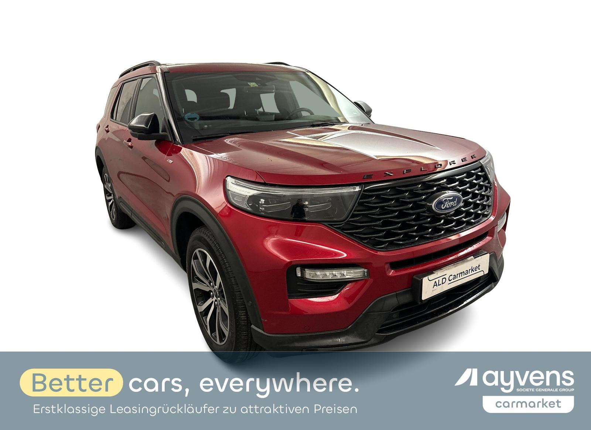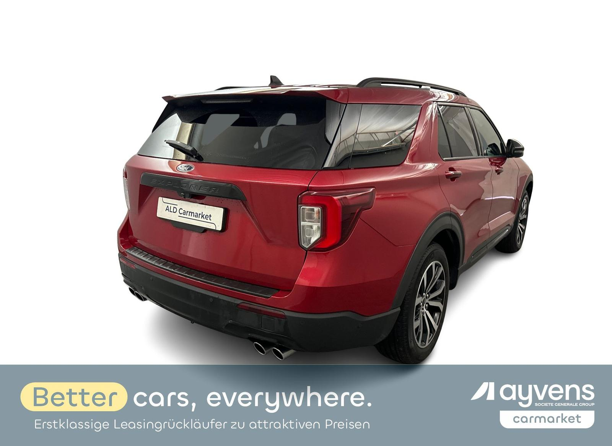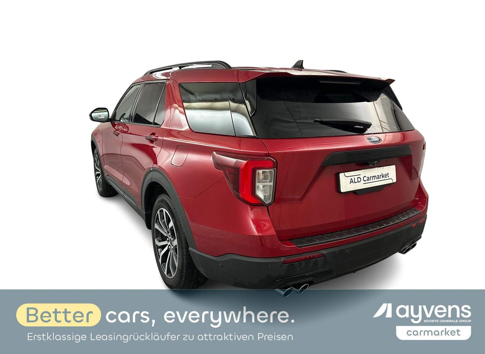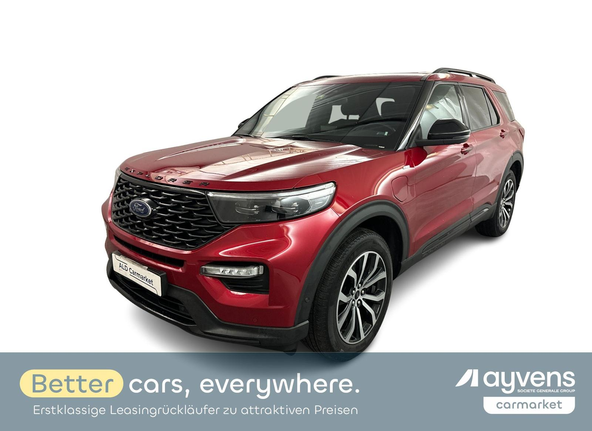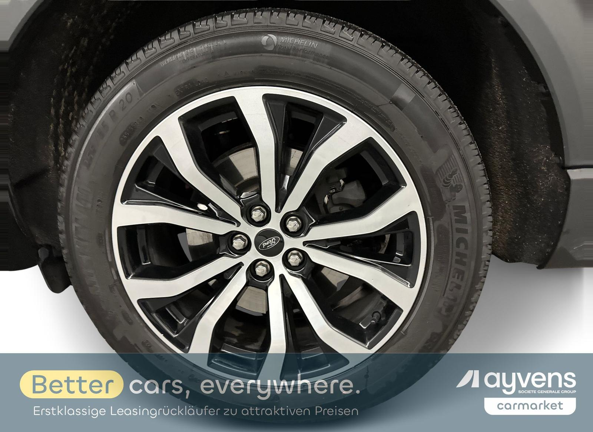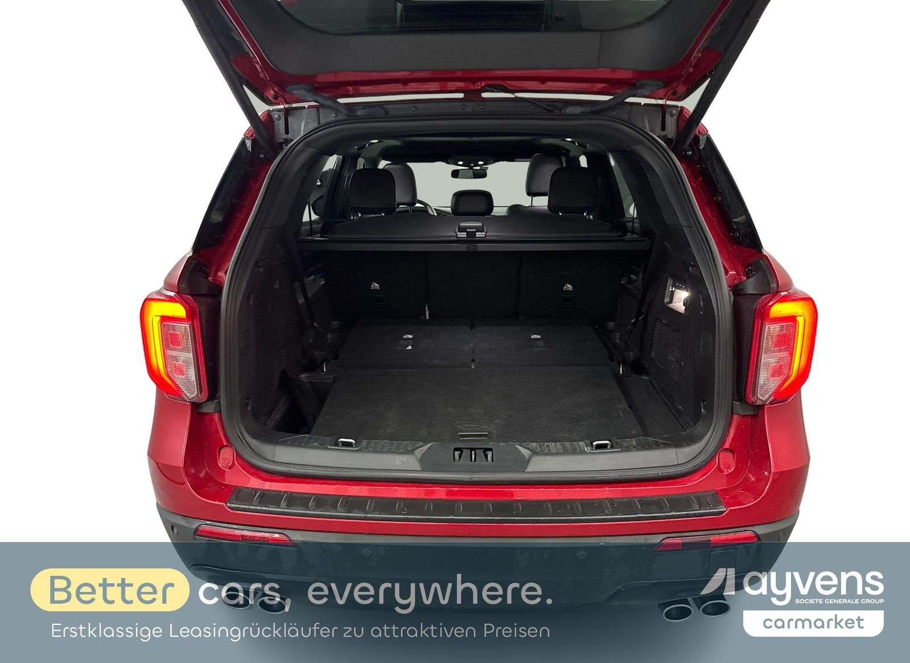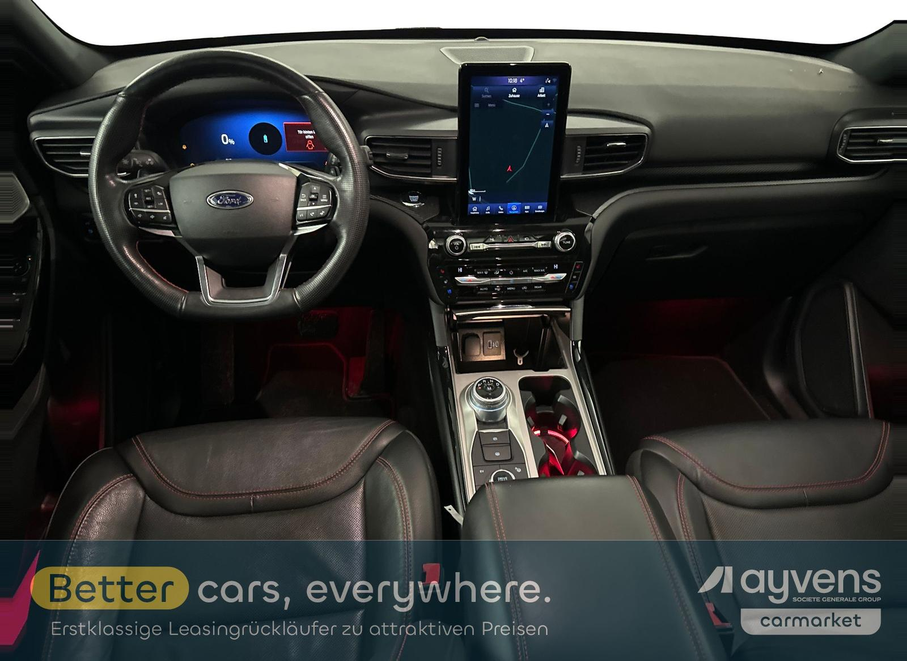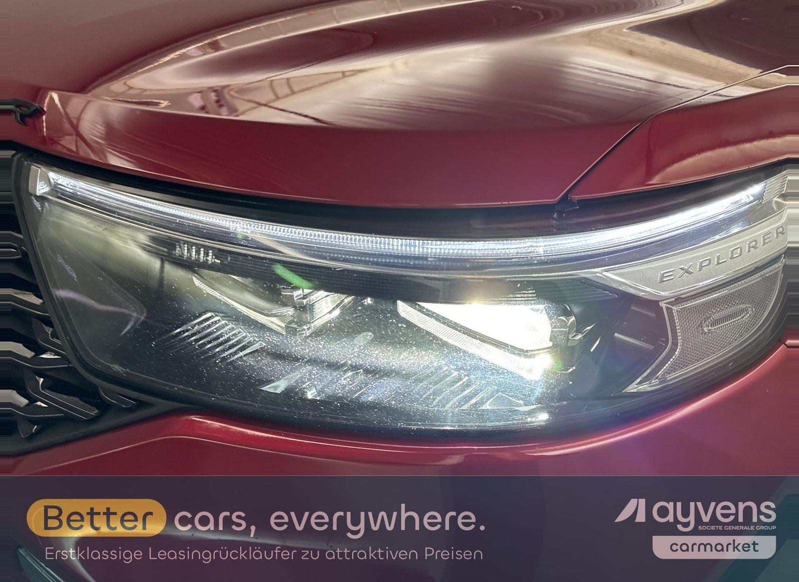 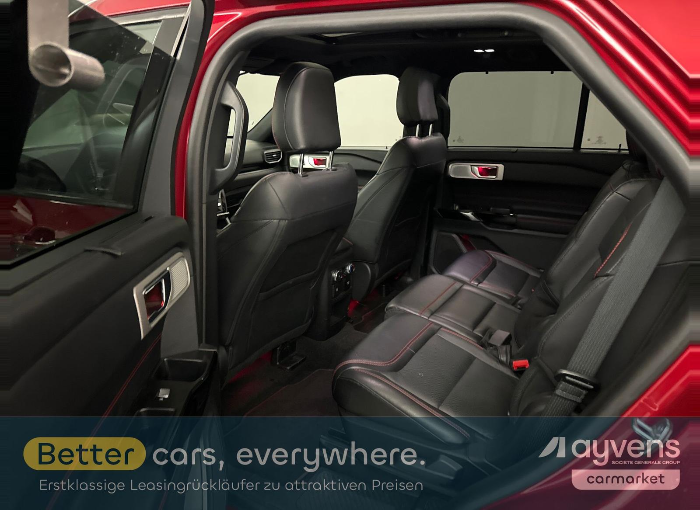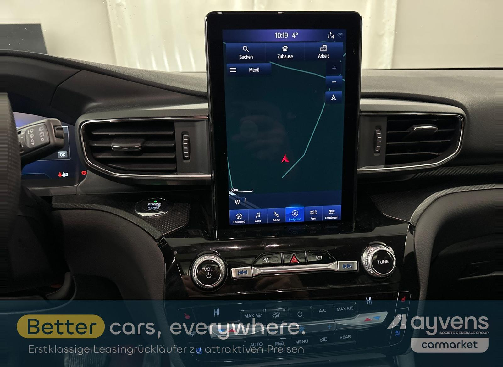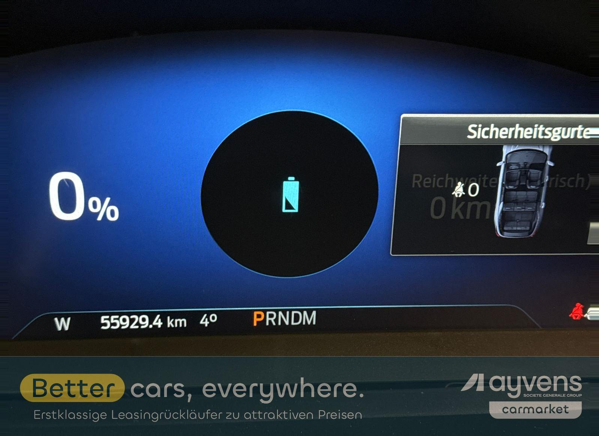
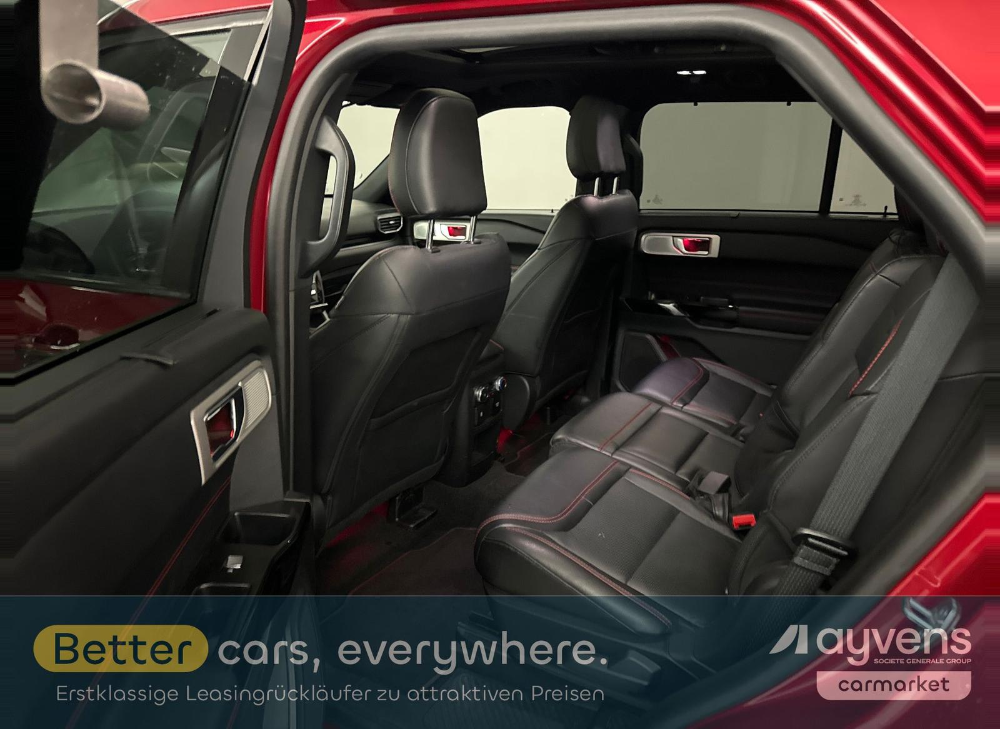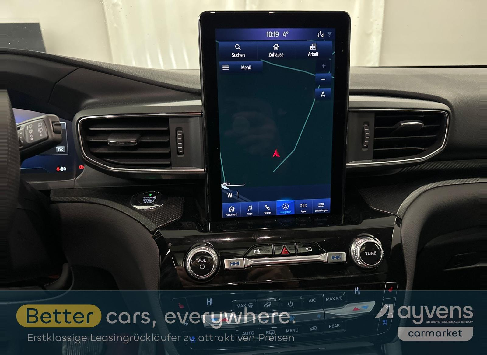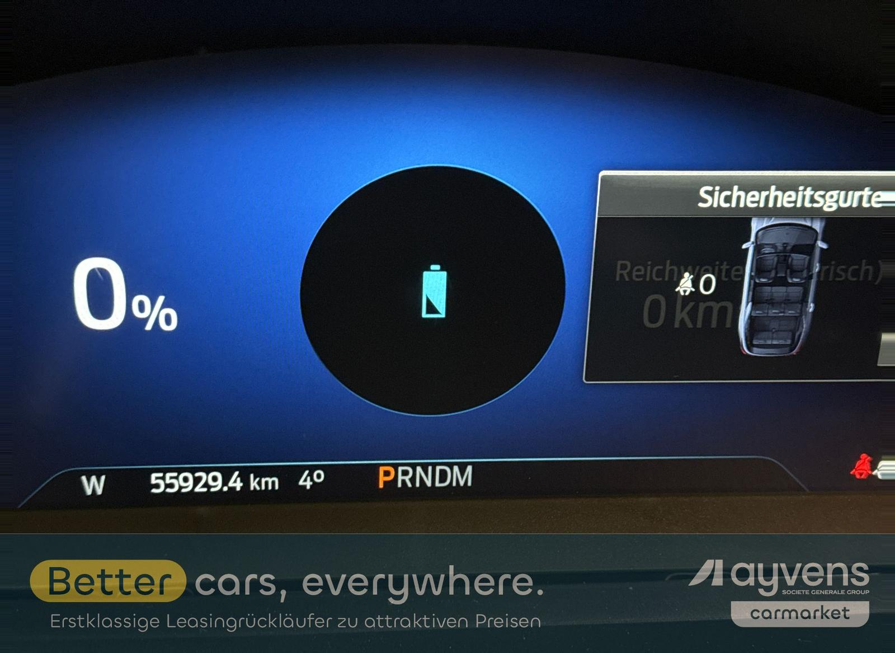